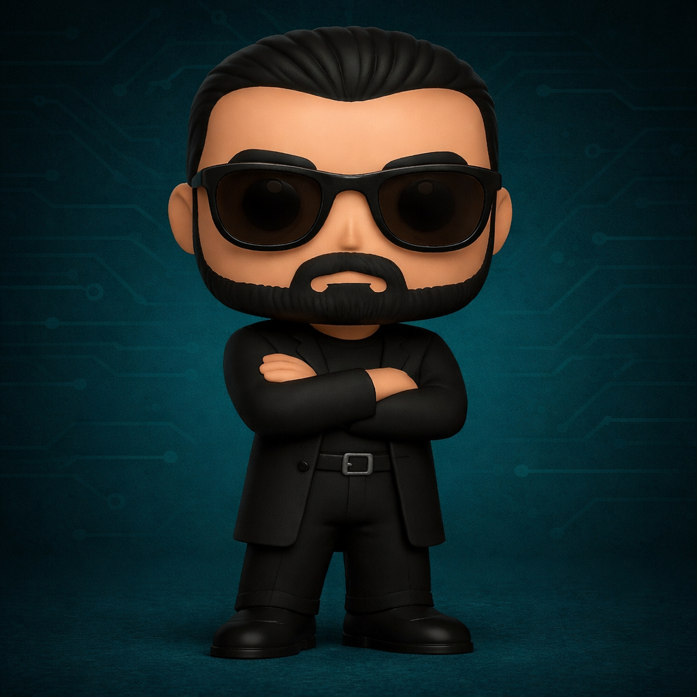

Alianzas profesionales para potenciar capacidades operativas.
Somos un grupo de profesionales del sector de la seguridad, la inteligencia y la defensa, comprometidos con la generación de talento y el intercambio de conocimiento.
Profesionales con años de experiencia en operaciones reales y formadores en ciberinteligencia. Con Cypher Intelligence buscamos ser un punto de encuentro para la capacitación avanzada, la generación de conocimiento y el desarrollo de soluciones tácticas que aporten valor real a la comunidad profesional.

YokranEl promptologo
Analista de inteligencia, especialista en OSINT, SOCMINT y V.HUMINT, experto en IA aplicada, especializado en convertir ideas complejas en soluciones operativas. Creador de NARSIL, un entorno único diseñado para labores de ciberinteligencia, y cofundador de Horus Project, iniciativa pionera orientada a la localización de personas desaparecidas mediante crowdsourcing y OSINT. Ha participado en más de un centenar de operaciones, convirtiendo esa experiencia en una manera de trabajar que hoy cristaliza en lo que ha denominado Método Cypher: un enfoque práctico para que la ciberinteligencia gire alrededor del análisis, con procesos simples, repetibles y orientados a resultados. Todo bajo un principio constante: máxima operatividad con mínima complejidad, y OPSEC como punto de partida.
RedoxThe Ghost
Especialista en Virtual HUMINT e infiltración, con experiencia en entornos sensibles y coordinación en operaciones internacionales junto a equipos y servicios de inteligencia de más de 15 países. Experto en análisis y lectura del comportamiento, comunicación persuasiva y gestión de identidades. Ha recibido formación avanzada en marcos y metodologías asociados a FBI y Mossad, aportando al equipo una visión táctica y una capacidad diferencial para moverse con precisión donde otros solo ven riesgo. Es el autor de Cyber Intel 360º, un programa formativo integral sobre ciberinteligencia caracterizado por su método de aprendizaje disruptivo.
SkylerTalento natural
Viene del mundo operativo y destaca por una capacidad de aprendizaje excepcional: pasa de no saber a dominar en horas, tanto en desarrollo como en V.HUMINT, hasta aplicarlo en casos reales con solvencia. Su perfil combina calle y pantalla: mentalidad táctica, lectura del entorno y ejecución técnica para convertir información dispersa en decisiones claras. Es autora de CorrelAX y GIV Nav, dos herramientas orientadas a la fase analítica de la investigación virtual, diseñadas para transformar datos en patrones, hipótesis y resultados, elevando el estándar del equipo y compitiendo sin complejos con soluciones de organizaciones con presupuestos muy superiores.